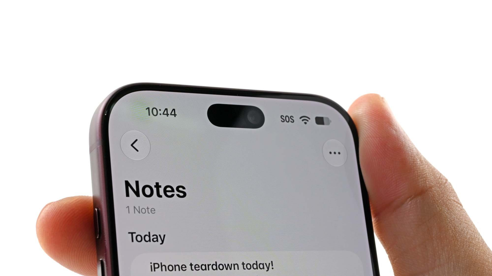
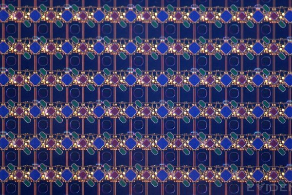
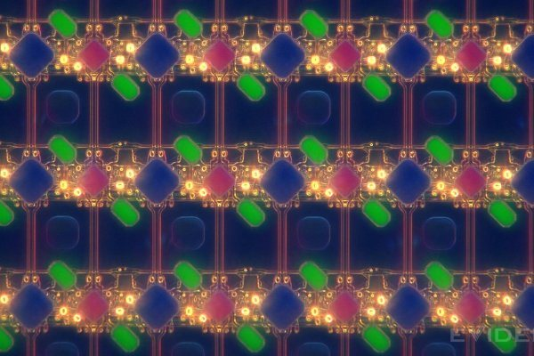
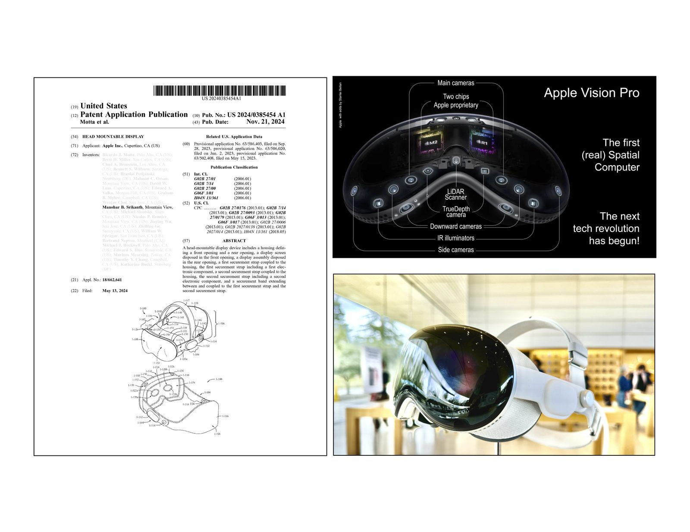

How the invisible camera took shape. What iFixit found. And the person behind it.
Invention of the Disappearing Camera
For a decade, mobile hardware was trapped by a false compromise. We spend 99% of our time looking at our screens, and less than 1% of our time looking into the front-facing camera. Yet, that 1% dictated the entire hardware architecture. It demanded a bezel. Then a notch. Then a cutout. We were permanently breaking the primary consumer experience to accommodate a secondary use case.
Incremental engineering shrinks the cutout. Zero-to-one architecture removes it entirely.
In 2015, I stopped asking how to hide the camera around the screen, and started asking how to make the display unbroken. The answer was counterintuitive: force the display and the sensor to occupy the exact same physical space.
To achieve an edge-to-edge canvas, the OLED matrix had to sit directly over the lens. But when you place a camera behind an active display, diffraction is inevitable. The light breaks.
Standard engineering tries to fight this physical reality, attempting to force the display to be perfectly transparent. System architecture dictates a different approach: if you cannot eliminate the distortion, you control it.
We didn't just build a lens and write a software filter. We co-designed the physical optical stack and the algorithmic restoration pipeline simultaneously. We engineered the display’s pixel matrix to yield and degrade the incoming light in a highly specific, mathematically predictable pattern. By intentionally shaping this distortion, we ensured the system’s point spread function (PSF) maintained optimal numerical conditioning.
We designed the hardware to hand the software a puzzle it was mathematically guaranteed to solve.
A mathematically recovered image, however, is not the same as a beautiful photograph. The ultimate metric for this architecture was never just signal preservation — it was human perception.
Every layer of the pipeline was tuned against the rigorous standards of photographic aesthetics. We weren't just inverting a matrix; we were protecting skin tones, preserving natural micro-contrast, and maintaining the emotional resonance of the image. The technology solves the physics, but the architecture serves the art.
When I first proposed this architecture, I was explicitly told it was impossible. The industry consensus was that you cannot defy the physical behavior of light. But zero-to-one invention is rarely just a battle against physics; it is a battle against consensus.
For the first year, I carried it largely alone — the consensus was that it couldn't be done. Then a select few individuals believed in me and supported me in carrying it forward.
To win that battle, I didn't rely on industry trends — I went back to first principles. I cannot count the thousands of times I returned to my notes from MIT’s 2.710 Optics class. The proof that we could control the distortion was hiding in the fundamental math of diffraction, deconvolution, and lens behavior.
Pushing this from a heavily doubted whiteboard concept to a shipping reality was an exercise in extreme friction. It demanded a decade of unyielding perseverance, quiet hard work, and an absolute refusal to accept consensus over physics. I took the challenge personally. Today, it ships.
True system architecture doesn't chase the market; it dictates where the market will be a decade later.
The screen is whole.
On September 20, 2026, iFixit published the teardown of the iPhone 18 Pro and Pro Max — and trained microscopes on the Face ID region. Their verified findings: the IR camera moved under the screen toward the upper-left; the opening is barely a dimmer circle; every other row of display pixels is absent above it; pixel density transitions around the edge — and an apparent IR-pass filter beneath the OLED creates an “eclipse” appearance.



Images: iFixit
A precision note: on the 18 Pro Max, only the Face ID infrared camera moved beneath the OLED — the selfie camera and IR dot projector stayed in the central opening. On the iPhone Duo, the hidden FaceTime camera sits beneath the inner display.
In June 2015, I became a founding member of Apple’s Vision Products Group — the team that incubated the Apple Vision Pro — and went on to co-invent the foundational passthrough system (PCT/US2024/029534).
The invisible camera wasn’t luck. It was pattern.

Four layers of training, converging on one idea: light as a design material.
I’m a photographer with solo and group exhibitions at MIT, where I also taught photography. My guiding lens: “Art + Science + Product + human-centric products.”
I’m open to thoughtful conversations, collaborations, and advisory roles.
If you’re working on something the world doesn’t know is possible yet — start with hello.
Connect on LinkedIn